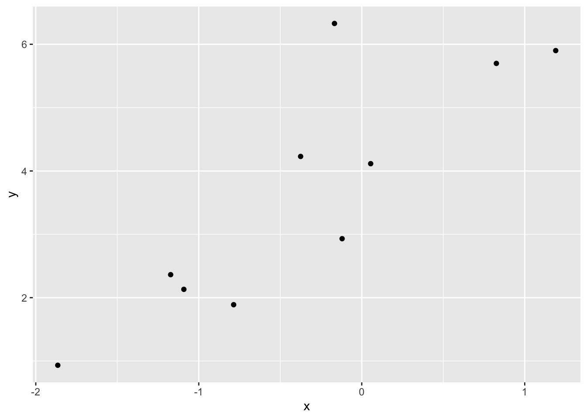

Tiny <- sample(dag01, size=2)21 Signal and noise
Imagine being transported back to June 1940. The family is in the living room, sitting around the radio console, waiting for it to warm up. The news today is from Europe, the surrender of the French in the face of the German invasion. Press the play button and listen to recording #103.
You may have to scroll down to see the play button and the recordings.
The spoken words from the recording are discernible despite the hiss and clicks of the background noise. The situation is similar to a conversation in a sports stadium. The crowd is loud, so the speaker has to shout. The listener ignores the noise (unless it is too loud) and recovers the shouted words.
Engineers and others make a distinction between signal and noise. The engineer aims to separate the signal from the noise. That aim applies to statistics as well.
There are many sources of noise in data; every variable has its own story, part of which is noise from measurement errors and recording blunders. For instance, economists use national statistics, like GDP, even though the definition is arbitrary (a Hurricane can raise GDP!), and early reports are invariably corrected a few months later. Historians go back to original documents, but inevitably many of the documents have been lost or destroyed: a source of noise. Even in elections where, in principle, counting is straightforward, the voters’ intentions are measured imperfectly due to “hanging chads,” “butterfly ballots,” broken voting machines, spoiled ballots, and so on.
The statistical thinker is well advised to know about the sources of noise in the system she is studying. Analysis of data will be better the more the modeler knows about how measurements are made and data collected.
Noise in hiring
The author has, on several occasions, testified in legal hearings as a statistical expert. In one case, the US Department of Labor audited the records of a contractor with several hundred employees and high employee turnover. The records led the Department to bring suit against the contractor for discriminating against Hispanics. The hiring records showed that many Hispanics applied for jobs; the company hired none. An open-and-shut case.
The lawyers for the defense asked me, the statistical expert, to review the findings from the Department of Labor. The lawyers thought they were asking me to check the arithmetic in the hiring spreadsheets. As a statistical thinker, I know that arithmetic is only part of the story; the origin of the data is critically important. So I asked for the complete files on all applicants and hires the previous year.
The spreadsheet files and the paper job applications were in accord; there were many Hispanic applicants. But the data on the paper job application form was not always consistent with the data on hiring spreadsheets. It turned out that whenever an applicant was hired, the contractor (per regulation) got a report on that person from the state police. The report returned by the state police had only two available race/ethnicities: white and Black. The contractor’s personnel office filled in the hired-worker spreadsheet based on the state police report. So all the Hispanic applicants who were hired had been transformed into white or Black by the state police. Noise.
Signal and noise
To illustrate the statistical problem of signal and noise, let us turn to a DAG simulation: dag01. Here’s a sample from dag01:
| x | y |
|---|---|
| -0.3260365 | 2.836001 |
| 0.5524619 | 5.043052 |
The DAG simulation implements a relationship between x and y. In statistics, this relationship is the signal.
Look at the 2-row sample (?tbl-tiny-dag01) from the DAG and guess what the relationship might be.
Any of an infinite number of possible relationships could account for the x and y data. The noise reduction problem of statistics is to make a guess that is as good as possible. Unfortunately, for a sample with \(n=2\), as “good as possible” is not very good!
More data—a bigger sample—gives us a better shot at revealing the relationship hidden by the noise. ?tbl-small-dag01 shows a sample of size \(n=10\):
Small <- sample(dag01, size=10)| x | y |
|---|---|
| -0.7859732 | 1.8888204 |
| 0.0547389 | 4.1153256 |
| -1.1725603 | 2.3632792 |
| -0.1673128 | 6.3287614 |
| -1.8650316 | 0.9329524 |
| -0.1204402 | 2.9310384 |
| 0.8259787 | 5.6981878 |
| 1.1901595 | 5.9006170 |
| -1.0914519 | 2.1314570 |
| -0.3751124 | 4.2296648 |
A careful perusal of the Small sample suggests some patterns. x is never larger than about 2 in magnitude and can be positive or negative. y is always positive. Furthermore, when x is negative, the corresponding y value is relatively small compared to the y values for positive x.
A sample of size \(n=10\) provides more information than a sample of \(n=2\), so we can make a more informed guess about the relationship between variables x and y.
Human cognition is not well suited to looking at long columns of numbers. Often, we can make better use of our natural human talents by translating the sample into a graphic:

Collecting more data can make the relationship clearer. Figure 21.1 displays an \(n=10,000\) sample.
Large <- sample(dag01, size=10000)x and y is evident graphically. (The original Small sample is shown in orange.)There are many possible ways to describe the x-y relationship in Figure 21.1. For instance, we can see that when x is positive, y is almost always greater than 4, but for negative x, the value of y tends to be less than 4. Such a description might be apt for some purposes, but in these Lessons, we describe relationships by fitting models to data. For example, the following command uses the small sample (n=10) as the training data:
lm(y ~ x, data = Small) %>% coef() # n = 10 sample(Intercept) x
4.262846 1.741758 The coefficients provide the information needed to construct the formula for the model function: \[y = 4.26 + 1.74 x\ .\] This formula is a guess of the signal—the relationship between the two variables in dag01. Unfortunately, the formula tells us nothing about the noise obscuring the signal nor how good the guess is.
The model coefficients produced by training the model on a much larger sample will presumably be a better guess:
lm(y ~ x, data = Large) %>% coef() # n = 10,000 sample(Intercept) x
4.008928 1.495904 Unfortunately, we cannot tell from the coefficients how good the guess is.
Luckily for us, since the data are a simulation from a DAG, we can see what the coefficients should be as well as the origin of the noise mixing in with the signal.
print(dag01)x ~ exo()
y ~ 1.5 * x + 4 + exo()The Large sample produced coefficients much closer than the Small sample to the mechanism in the DAG. The idea that larger samples lead to better accuracy has been appreciated since the 16th century and now has the prestige of being a “Law”: the Law of Large Numbers.
However, “better accuracy” does not tell us whether the accuracy suffices for any given purpose. The model filters out some of the noise. However, the model coefficients still display a noisy legacy.
The challenge of real-world data is that we cannot open the black box that generated the data; all we have is the data! So how can we tell whether the data at hand are sufficient for giving a usefully accurate description of the actual relationships?
The key to the puzzle is the variation within the sample.
Measuring variation
Lesson 20 introduced the standard way to measure variation in a single variable: the variance or its square root, the standard deviation. For instance, we can measure the variation in the variables from the Large sample using sd() and var():
Large %>%
summarize(sx = sd(x), sy = sd(y), vx = var(x), vy = var(y))| sx | sy | vx | vy |
|---|---|---|---|
| 0.9830639 | 1.779003 | 0.9664146 | 3.164851 |
According to the standard deviation, the size of the x variation is about 1. The size of the y variation is about 1.7.
Look again at the formulas that compose dag01:
print(dag01)x ~ exo()
y ~ 1.5 * x + 4 + exo()The formula for x shows that x is endogenous, its values coming from a random number generator, exo(), which, unless otherwise specified, generates noise of size 1.
As for y, the formula includes two sources of variation:
- The part of
ydetermined byx, that is \(y = \mathbf{1.5 x} + \color{gray}{4 + \text{exo()}}\) - The noise added directly into
y, that is \(y = \color{gray}{\mathbf{1.5 x} + 4} + \color{black}{\mathbf{exo(\,)}}\)
The 4 in the formula does not add any variation to y; it is just a number.
We already know that exo() generates random noise of size 1. So the amount of variation contributed by the + exo() term in the DAG formula is 1. The remaining variation is contributed by 1.5 * x. The variation in x is 1 (coming from the exo() in the formula for x). A reasonable guess is that 1.5 * x will have 1.5 times the variation in x. So, the variation contributed by the 1.5 * x component is 1.5. The overall variation in y is the sum of the variations contributed by the individual components. This suggests that the variation in y should be \[\underbrace{1}_\text{from exo()} + \underbrace{1.5}_\text{from 1.5 x} = \underbrace{2.5}_\text{overall variation in y}.\] Simple addition! Unfortunately, the result is wrong. In the previous summary of the Large, we measured the overall variation in y as about 1.72.
The variance will give a better accounting than the standard deviation. Recall that exo() generates variation whose standard deviation is 1, so the variance from exo() is \(1^2 = 1\). Since x comes entirely from exo(), the variance of x is 1. So is the variance of the exo() component of y.
Turn to the 1.5 * x component of y. Since variances involve squares, the variance of 1.5 * x works out to be \(1.5^2\, \text{var(}\mathit{x}\text{)} = 2.25\). Adding up the variances from the two components of y gives
\[\text{var(}\mathit{y}\text{)} = \underbrace{2.25}_\text{from 1.5 exo()} + \underbrace{1}_\text{from exo()} = 3.25\]
This result that the variance of y is 3.25 closely matches what we found in summarizing the y data generated by the DAG.
The lesson here: When adding two sources of variation, the variances of the individual sources add to form the overall variance of the sum. Just like \(A^2 + B^2 = C^2\).
DAGs from data
In modeling data from dag01 we could recover a good approximation to the formula for y.
Large %>%
lm(y ~ x, data = .) %>%
coef()(Intercept) x
4.008928 1.495904 A DAG describes the causal links between variables. Data modeling reveals the formula implementing the causal link in dag01. Nevertheless, it is wrong to think we can determine the DAG that generated the data from the data alone. Only if we already know the structure of the data-generation DAG can we recover the mechanism inside that DAG. For instance, another statistical thinker might believe that the causal mechanism behind the data is y causing x. Based on this assumption, she also can find the mechanism inside her hypothesized DAG:
sample(dag01, size=10000) %>%
lm(x ~ y, data = .) %>%
coef()(Intercept) y
-1.8261448 0.4559782 A DAG is a hypothesis, a statement that might or might not be true. DAGs are part of the statistical apparatus for thinking responsibly about causality. Use a DAG—or, potentially, multiple DAGs—when the issue of what causes what is relevant to the purpose behind the work.
When there are only two variables involved in the system under consideration—we will call them X and Y for simplicity—there are only two possible DAGs:
\[X \rightarrow Y\ \ \ \ \ \text{and}\ \ \ \ \ X \leftarrow Y\] Our understanding of the world sometimes allows us to focus on one of these and not the other. Example: Does the rooster crowing cause the sun to rise, or does the rising sun cause the rooster to crow?
Beyond the two DAGs \(X \rightarrow Y\) and \(X \leftarrow Y\), additional DAG possibilities can account for the relationship between X and Y. For instance, if we introduce another variable, C, located between X and Y, four other DAGs need to be considered:
\[X \rightarrow C \rightarrow Y \ \ \ \ \ \text{and}\ \ \ \ \ X \leftarrow C \leftarrow Y \ \ \ \ \ \text{and}\ \ \ \ \ X \leftarrow C \rightarrow Y \ \ \ \ \ \text{and}\ \ \ \ \ X \rightarrow C \leftarrow Y\]
There are many other DAG configurations involving three variables. To keep things simple, we will restrict things to DAGs where X might or might not cause Y, but Y never causes X.1 Figure 21.2 shows the ten configurations of 3-variable DAGs where Y does not cause X.

With the conceptual tool of DAGs, the statistical thinker can consider multiple possibilities for what might cause what. Sometimes she can discard some of the possibilities based on common sense. (Think: roosters and the sun.) However, in other settings, there may be possibilities that she does not favor but might be plausible to other people. In Lesson 28, we will explore how each configuration of DAG has implications for which model formulas can or cannot reveal the hypothesized causal mechanism.
We do not lose generality by this restriction. The modeler gets to choose which real-world variable corresponds to X and which one to Y.↩︎